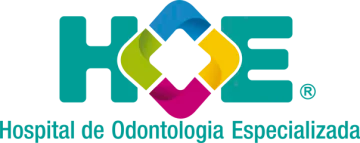
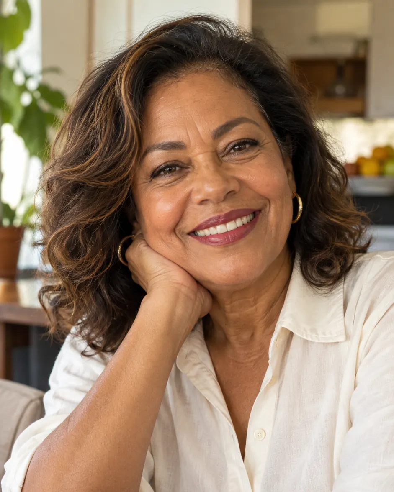
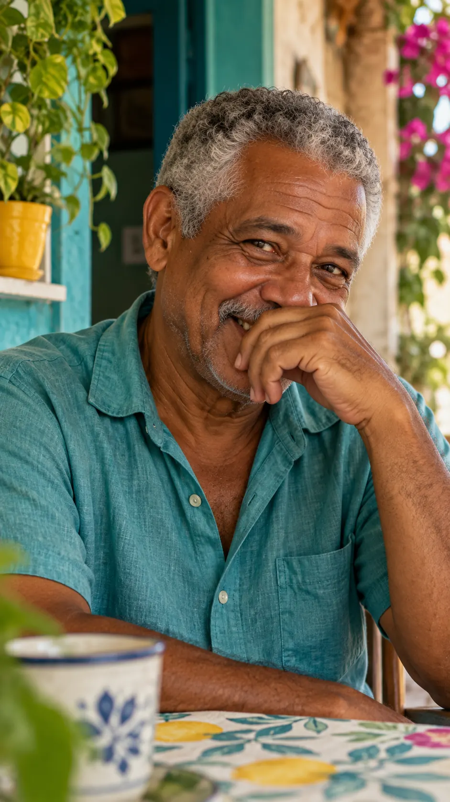
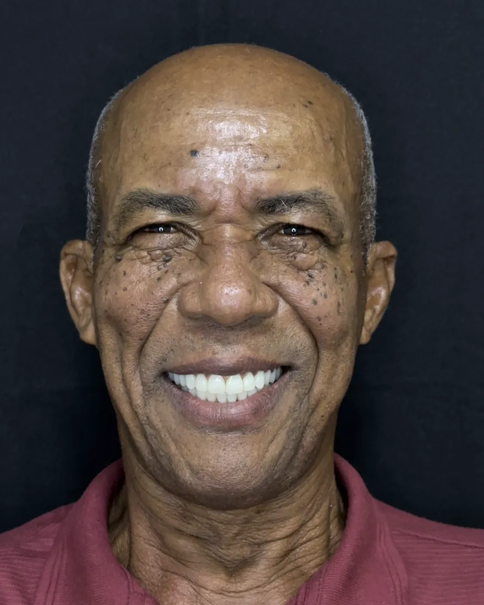
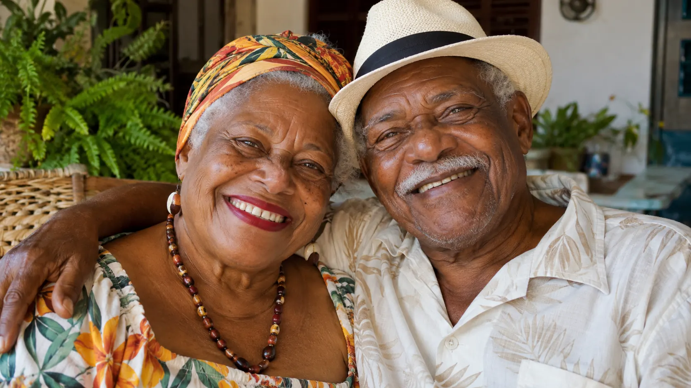

Pituba
Av. Manoel Dias da Silva, 1783 — Pituba, Salvador – BA, 41830-001
Seg. a sex. 8:00 – 19:00 · Sáb. 8:00 – 13:00

Perdeu dentes ou sua prótese não fica firme? Com a Prótese Protocolo, você sai com dentes fixos no mesmo dia da cirurgia, com a segurança de um Hospital Odontológico.

Você se identifica?

O impacto na sua vida
Quem convive com uma prótese instável passa a controlar cada gesto: como ri, o que pede no restaurante, onde senta à mesa. Sem perceber, deixa de ser espontâneo.
O almoço em família vira estratégia: comer devagar, cortar tudo pequeno, recusar o que gosta.
Beijar, gargalhar ou dormir ao lado de alguém sem o receio de a prótese se mover.
Falar numa reunião ou num encontro sem ficar atento à própria boca.
Mastigar mal afeta a alimentação. E, sem as raízes dos dentes, o osso da região tende a diminuir com o tempo.
Rir de uma piada sem pôr a mão na frente da boca. Aceitar o convite para o churrasco de domingo. Contar uma história sem medo de a prótese escapar.
A gente sabe: bate medo da cirurgia, o valor preocupa e ninguém quer um tratamento sem fim. Por isso, o primeiro passo é só uma conversa. Você conta o que está incomodando, e a equipe explica com calma o que dá para fazer.
AGENDE SUA CONSULTA AGORAO que é a Prótese Protocolo
A Prótese Protocolo substitui todos os dentes de uma arcada, superior ou inferior, por uma estrutura parafusada sobre implantes. Não usa adesivo, não sai para dormir e devolve a firmeza para mastigar e sorrir.
Nada de tirar a prótese para comer ou dormir.
Quem segura a prótese são os implantes.
Volte aos alimentos que ficaram de lado.
Formato e cor dos dentes pensados para o seu rosto.

Lado a lado
Para quem é indicada
A avaliação confirma se é o seu caso.
Como funciona
Cada etapa é explicada antes de acontecer. Você sabe o que vem a seguir, quanto tempo leva e quanto custa.
Ouvimos sua história e avaliamos a saúde bucal e a prótese atual.
Exames de imagem definem a posição dos implantes e o desenho da nova arcada.
Implantes instalados no centro cirúrgico, com sedação quando indicada.
Quando indicado, você sai da cirurgia com dentes fixos provisórios.
Após a cicatrização, instalamos a definitiva com acabamento final.
Retornos periódicos cuidam da gengiva e da durabilidade da prótese.
Segurança hospitalar
Ambiente controlado, preparado para procedimentos de diferentes complexidades.
Quando há sedação, ela é conduzida por especialista, com sinais vitais monitorados.
Especialistas de áreas diferentes planejam o seu caso em conjunto.
Exames de imagem e simulação antes de qualquer procedimento.


Cuidado em cada detalhe
O polimento da prótese definitiva é feito com precisão, para contribuir com o conforto da gengiva, o brilho natural dos dentes e a facilidade na higiene.
AGENDE SUA CONSULTA AGORAExperiência

História real
Depois de anos tentando resolver o problema, ela encontrou no HOE acolhimento, profissionalismo e um plano pensado para ela.
Se você também quer viver essa mudança, fale agora com nossa equipe.
AGENDE SUA CONSULTA AGORADepoimento real
Esta paciente chegou com uma prótese total removível antiga e recebeu uma prótese nova em poucos dias.
Seu sorriso não precisa esperar.
AGENDE SUA CONSULTA AGORAA transformação

Esse pode ser o seu próximo capítulo.
AGENDE SUA CONSULTA AGORAInvestimento
É natural que o investimento pese na decisão. O valor exato é apresentado depois da avaliação, porque depende de:
Atendimento 100% particular. Na avaliação, você recebe o plano completo, com etapas, prazos e investimento.
AGENDE SUA CONSULTA AGORADúvidas frequentes
Não encontrou sua dúvida?
AGENDE SUA CONSULTA AGORAÉ uma prótese fixa que substitui todos os dentes de uma arcada e fica parafusada sobre implantes. Diferente da dentadura, ela não é removida pelo paciente: a remoção para manutenção é feita pelo dentista.
A dentadura se apoia na gengiva, pode se mover e muitas vezes exige adesivo. A Prótese Protocolo fica fixa sobre implantes, com mais estabilidade para mastigar, falar e sorrir.
Muitos pacientes podem ser candidatos. A indicação depende da saúde bucal e da estrutura óssea, avaliadas na consulta e nos exames de imagem.
Em casos indicados, sim. Com a carga imediata, você sai da cirurgia com uma prótese fixa provisória. Isso depende da estabilidade dos implantes e da avaliação clínica.
O procedimento é feito com anestesia e, quando indicado, com sedação conduzida por médico anestesista. O desconforto dos dias seguintes costuma ser controlado com as orientações e medicações da equipe.
Depende dos exames. Em muitos casos existem alternativas, como enxertos ou técnicas específicas de implante, definidas no planejamento.
A limpeza é diária, com escova e acessórios indicados pela equipe para higienizar sob a prótese. Os retornos periódicos completam o cuidado com a gengiva e a durabilidade da prótese.
Formato, tamanho e cor dos dentes são planejados de acordo com o seu rosto, e a prótese definitiva recebe acabamento e polimento feitos à mão.
O valor varia conforme o número de implantes, a arcada tratada, o tipo de prótese e a complexidade do caso. O investimento é apresentado após a avaliação, com parcelamento em até 21x sem juros no cartão.
Não. O atendimento é 100% particular: o HOE não atende convênios, planos odontológicos, SUS ou programas do governo.
Unidades HOE
Av. Manoel Dias da Silva, 1783 — Pituba, Salvador – BA, 41830-001
Seg. a sex. 8:00 – 19:00 · Sáb. 8:00 – 13:00
Av. Luís Viana, 8544 — Piso L1, Alphaville, Salvador – BA, 41730-101
Seg. a sex. 8:00 – 19:00 · Sáb. 8:00 – 13:00